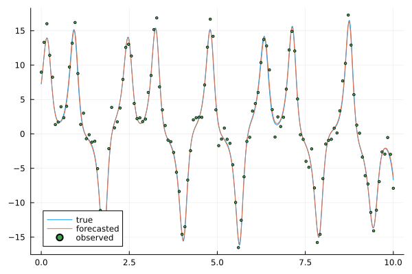

Analog forecasting
using Plots, OrdinaryDiffEq, AnalogDataAssimilation
using SciMLBase: ODEProblem, solve
σ = 10.0
ρ = 28.0
β = 8.0 / 3
dt_integration = 0.01
dt_states = 1
dt_obs = 8
var_obs = [1]
nb_loop_train = 100
nb_loop_test = 10
sigma2_catalog = 0.0
sigma2_obs = 2.0
ssm = StateSpaceModel(
lorenz63,
dt_integration,
dt_states,
dt_obs,
[σ, ρ, β],
var_obs,
nb_loop_train,
nb_loop_test,
sigma2_catalog,
sigma2_obs,
)StateSpaceModel(AnalogDataAssimilation.lorenz63, 0.01, 1, 8, [10.0, 28.0, 2.6666666666666665], [1], 100, 10, 0.0, 2.0)compute u0 to be in the attractor space
u0 = [8.0; 0.0; 30.0]
tspan = (0.0, 5.0)
prob = ODEProblem(ssm.model, u0, tspan, ssm.params)
u0 = last(solve(prob, reltol = 1e-6, save_everystep = false).u)3-element Vector{Float64}:
7.256695344830321
11.744310095224236
16.966748542614116Generate the data
xt, yo, catalog = generate_data(ssm, u0)(TimeSeries(1001, 3, [0.0, 0.01, 0.02, 0.03, 0.04, 0.05, 0.06, 0.07, 0.08, 0.09 … 9.91, 9.92, 9.93, 9.94, 9.95, 9.96, 9.97, 9.98, 9.99, 10.0], [[7.256695344830321, 11.744310095224236, 16.966748542614116], [7.716941413665522, 12.432972842215474, 17.413430468380007], [8.199257175575077, 13.12626899722214, 17.959085006241875], [8.701481949907738, 13.812897583813351, 18.610321023371657], [9.22037313751179, 14.479048453160608, 19.37213298407071], [9.751606024225648, 15.108410342044047, 20.247887058324913], [10.289665165659427, 15.682281823637583, 21.238294358222717], [10.827558269387145, 16.1790603851345, 22.340596488771354], [11.356904368077327, 16.576264208759778, 23.547120935622864], [11.86796444797629, 16.851141389297215, 24.844694404091715] … [-3.6569729132839073, -5.928855881615833, 14.543428930174606], [-3.89478827504198, -6.378161828816444, 14.389918608714163], [-4.154351013767319, -6.8617689257170715, 14.27418458708778], [-4.436877425927924, -7.38157364114739, 14.200438665617828], [-4.743681145704715, -7.938810850048696, 14.173641614127163], [-5.076220104180754, -8.5346264134075, 14.199655555791752], [-5.435776445860509, -9.169381438534025, 14.285080245786745], [-5.8233979635542115, -9.8423152292363, 14.43726694614963], [-6.239898098377616, -10.551545285819737, 14.664318425780227], [-6.685855939752098, -11.294067305087287, 14.975088960440695]]), TimeSeries(1001, 3, [0.0, 0.01, 0.02, 0.03, 0.04, 0.05, 0.06, 0.07, 0.08, 0.09 … 9.91, 9.92, 9.93, 9.94, 9.95, 9.96, 9.97, 9.98, 9.99, 10.0], [[8.968292594708403, NaN, NaN], [NaN, NaN, NaN], [NaN, NaN, NaN], [NaN, NaN, NaN], [NaN, NaN, NaN], [NaN, NaN, NaN], [NaN, NaN, NaN], [NaN, NaN, NaN], [13.310958244499865, NaN, NaN], [NaN, NaN, NaN] … [NaN, NaN, NaN], [-2.9734376344352027, NaN, NaN], [NaN, NaN, NaN], [NaN, NaN, NaN], [NaN, NaN, NaN], [NaN, NaN, NaN], [NaN, NaN, NaN], [NaN, NaN, NaN], [NaN, NaN, NaN], [-7.903985162817934, NaN, NaN]]), Catalog(10001, 3, [-6.685855939752098 -7.161435168035229 … 0.9272021952622406 0.9624019472397424; -11.294067305087287 -12.06516200895034 … 1.2418890122282185 1.3505354495478974; 14.975088960440695 15.378989764919234 … 15.313597183389463 14.922706590021441], [-6.685855939752098 -7.161435168035229 … 0.8993359672668247 0.9272021952622406; -11.294067305087287 -12.06516200895034 … 1.1399065827516035 1.2418890122282185; 14.975088960440695 15.378989764919234 … 15.716443496461322 15.313597183389463], [-7.161435168035229 -7.66627940992799 … 0.9272021952622406 0.9624019472397424; -12.06516200895034 -12.857671165648929 … 1.2418890122282185 1.3505354495478974; 15.378989764919234 15.886174304090469 … 15.313597183389463 14.922706590021441], StateSpaceModel(AnalogDataAssimilation.lorenz63, 0.01, 1, 8, [10.0, 28.0, 2.6666666666666665], [1], 100, 10, 0.0, 2.0)))Create the forecasting function
af = AnalogForecasting(50, xt, catalog; regression = :local_linear, sampling = :multinomial)AnalogForecasting(NearestNeighbors.KDTree{StaticArraysCore.SVector{3, Float64}, Distances.Euclidean, Float64, StaticArraysCore.SVector{3, Float64}}
Number of points: 10000
Dimensions: 3
Metric: Distances.Euclidean(0.0)
Reordered: true, 50, Bool[1 1 1; 1 1 1; 1 1 1], Catalog(10001, 3, [-6.685855939752098 -7.161435168035229 … 0.9272021952622406 0.9624019472397424; -11.294067305087287 -12.06516200895034 … 1.2418890122282185 1.3505354495478974; 14.975088960440695 15.378989764919234 … 15.313597183389463 14.922706590021441], [-6.685855939752098 -7.161435168035229 … 0.8993359672668247 0.9272021952622406; -11.294067305087287 -12.06516200895034 … 1.1399065827516035 1.2418890122282185; 14.975088960440695 15.378989764919234 … 15.716443496461322 15.313597183389463], [-7.161435168035229 -7.66627940992799 … 0.9272021952622406 0.9624019472397424; -12.06516200895034 -12.857671165648929 … 1.2418890122282185 1.3505354495478974; 15.378989764919234 15.886174304090469 … 15.313597183389463 14.922706590021441], StateSpaceModel(AnalogDataAssimilation.lorenz63, 0.01, 1, 8, [10.0, 28.0, 2.6666666666666665], [1], 100, 10, 0.0, 2.0)), :local_linear, :multinomial)Data assimilation
np = 100
DA = DataAssimilation(af, xt, ssm.sigma2_obs)
x̂ = forecast(DA, yo, AnEnKS(np), progress = false);
println(RMSE(xt, x̂))0.38055701392347474Plot results
plot(xt.t, xt[1], label = "true")
plot!(xt.t, x̂[1], label = "forecasted")
scatter!(yo.t, yo[1], markersize = 2, label = "observed")
This page was generated using Literate.jl.